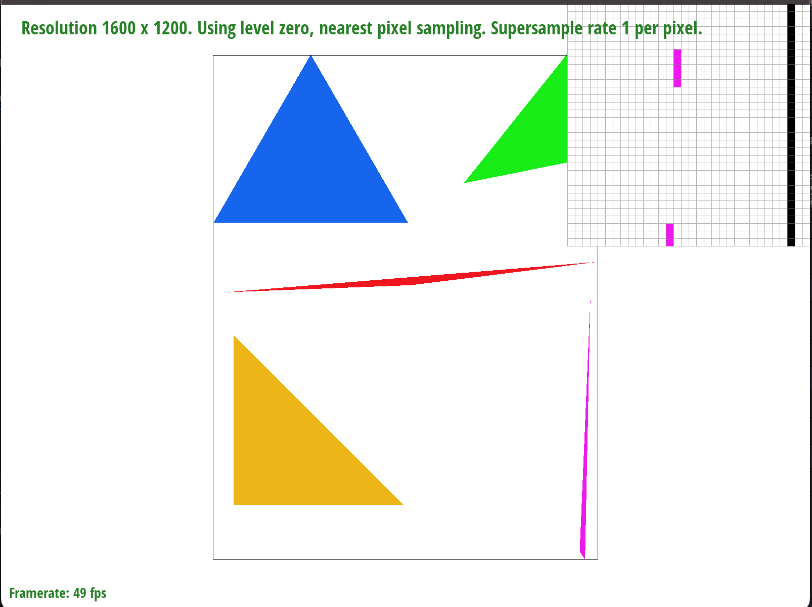

CS 184 Sp23 Project 1: Rasterizer
Rishi Kundargi
Mingyang Wang
Overview
Give a high-level overview of what you implemented in this project. Think about what you've built as a whole. Share your thoughts on what interesting things you've learned from completing the project.
Task 1 (20 pts)
- Walk through how you rasterize triangles in your own words.
- To rasterize a triangle, we have to perform 3 line checks for each point that lies in the range of the triangle. So, we find the limits of the x and y coordinates, and loop through all possible points that we could have to fill in, adding the 0.5 point for each sample point. Then, we create lines for each edge of the triangle, and create a norm vector for each of the edges. Then, we do our line check by doing a dot product between the norm and (current point - vertex). We do this dot product for each of the vertices and each of the points.
- If our points are arranged clockwise, then our point is in the triangle if all the dot products are positive. If the points are arranged counterclockwise, then our point is in the triangle if all the dot products are negative. If our point is outside of the triangle, then at least one of the dot products is positive and at least one is negative. Therefore, we can simply check if all of our dot products have the same sign (all >= 0 or all <= 0); if that is the case, then our point is in the triangle and we fill that pixel.
- Explain how your algorithm is no worse than one that checks each sample within the bounding box of the triangle.
- We limit our function to only iterate through points from in the bounding box (from the min x to max x of all triangle vertices, and same for y coordinates).
- Show a png screenshot of basic/test4.svg with the default viewing parameters and with the pixel inspector centered on an interesting part of the scene.
Task 2 (20 pts)
- Walk through your supersampling algorithm and data structures. Why is supersampling useful? What modifications did you make to the rasterization pipeline in the process? Explain how you used supersampling to antialias your triangles.
- Supersampling is useful as it enables us to lessen the effects of aliasing and attempt to remove jaggies, by rendering the image at a higher resolution then downscaling it back to the intended resolution.
- The modifications we made to the rasterization pipeline primarily revolve around us taking sqrt(sample_rate) by sqrt(sample_rate) samples per pixel in our original image. Once we have these samples, we then average the samples per pixel to give us an output color, and then fill in the pixel using that averaged rgb value. Since we used multiple samples per pixel, the size of our sampled data increased significantly, and due to the change in size, we used the sample buffer to store our supersampled data, whose size changed multiplicatively in accordance to our supersampling rate. We fill this sampling buffer with samples at the supersampling rate.
- Once we fill our sample buffer, we average every sqrt(sample_rate) by sqrt(sample_rate) values to write these rgb values into our frame buffer, which remains the same size as the original frame buffer.
- In order to maintain the thickness/opacity of lines when supersampling, we modified the rasterize_point function to fill in the entire corresponding sqrt(sample_rate) by sqrt(sample_rate) block with the desired pixel value.
- Show png screenshots of basic/test4.svg with the default viewing parameters and sample rates 1, 4, and 16 to compare them side-by-side. Position the pixel inspector over an area that showcases the effect dramatically; for example, a very skinny triangle corner. Explain why these results are observed.

- In our supersample rate of 1 per pixel, there are no medium values: a pixel is either pink or white. In the higher sampling rates, a pixel can have a rgb value somewhere between pink and white, due to the averaging of multiple pixels (for example 10 pink and 6 white pixels rgb values will average together to somewhere in between pink and white) giving us intermediate values for pixels. When we then zoom out, these give the human eye the interpretation of a smooth curve and there is no direct barrier between pink and white, and the lines become smoother and thus reduce the effects of aliasing and jaggies.
Task 3 (10 pts)
- Create an updated version of svg/transforms/robot.svg with cubeman doing something more interesting, like waving or running. Feel free to change his colors or proportions to suit your creativity. Save your svg file as my_robot.svg in your docs/ directory and show a png screenshot of your rendered drawing in your write-up. Explain what you were trying to do with cubeman in words.
We googled funny poses, and this is the image that made us laugh, it's from a site called “Do You Yoga”. Once we saw this pose, we knew that we had to make our robot do this as well. So the actual steps we did were that we rotated the upper arms by 90 degrees upwards and then translated them to make the joints line up. Then, our next step was to rotate the upper thighs and then translate the calves to make the joints line up. Finally, we changed the colors to best match the pose. We personally think we did a pretty good job, but would love your opinion.
Task 4 (10 pts)
- Explain barycentric coordinates in your own words and use an image to aid you in your explanation. One idea is to use a svg file that plots a single triangle with one red, one green, and one blue vertex, which should produce a smoothly blended color triangle.
- Barycentric coordinates are a coordinate system based around triangles - implying that they have three coordinates. Each coordinate can be thought of as representing the weight of that point relative to each vertex, or proportional distance from the vertex to the opposite edge. These three coordinates add up to 1 and describe the position of a point relative to the vertices of a triangle. In a more mathematical interpretation, the way to find these coordinates is to use linear interpolation to find the values at the vertices. A useful property about barycentric coordinates is that they remain the same regardless of if you scale or transform the triangle!
- Show a png screenshot of svg/basic/test7.svg with default viewing parameters and sample rate 1. If you make any additional images with color gradients, include them.

Task 5 (15 pts)
- Explain pixel sampling in your own words and describe how you implemented it to perform texture mapping. Briefly discuss the two different pixel sampling methods, nearest and bilinear.
- The principle of pixel sampling relies on transforming the coordinates of your pixel from x-y to u-v coordinates in the texture mapping world. The way to do this is by sampling from the texture map based on the coordinates of our current pixel. The issue arises when our (u, v) coordinate does not lie on a sample point in our texture map.
- Nearest neighbor sampling simply chooses the closest sample point to our transformed u-v coordinate.
- Bilinear interpolation will grab the four closes (u, v) points, and use linear interpolation in 2 dimensions to get a weighted average of the texture at (u, v), based on the four closes sample points around it.
- Check out the svg files in the svg/texmap/ directory. Use the pixel inspector to find a good example of where bilinear sampling clearly defeats nearest sampling. Show and compare four png screenshots using nearest sampling at 1 sample per pixel, nearest sampling at 16 samples per pixel, bilinear sampling at 1 sample per pixel, and bilinear sampling at 16 samples per pixel.
- Comment on the relative differences. Discuss when there will be a large difference between the two methods and why.
- The largest difference between the two methods can be seen at a sampling rate of 1 pixel. At this small of a sampling rate, being able to accurately interpolate and essentially average the value of 4 neighboring pixels gives us a much smoother transition between the black and yellow of the bird’s plumage. However, as we increase the sampling rate, the differences become less noticeable, as we are already sampling 16 times per pixel in the nearest sample, so the extra information we get in the bilinear interpolation is a lot less useful.
Task 6 (25 pts)
- Explain level sampling in your own words and describe how you implemented it for texture mapping.
- Level sampling works by taking the image, filtering out high frequencies (areas of contrast), and then sampling the image at a lower resolution. Essentially, we store multiple different versions of the image, each at a different (lower) resolution. Then, when we actually go to sample a pixel, we use the resolution of the image that most accurately matches the screen sampling rate.
- The first step in calculating the mipmap level to use is to derive the derivatives of u and v with respect to x and y. To do this, we to calculate the barycentric coordinates of (x, y), (x+1, y) and (x, y + 1), which was already implemented for us by the previous parts of the project, and find the coordinates of all 3 points in u-v coordinates. Once we have these, we calculated the derivatives as the difference between the points, and scaled these according to our width and height of the full resolution image.
- Once all these were calculated, we were able to get the correct level using the formulas above (from lecture 5 slides).
- We have 3 options for mip-map levels:
- L_ZERO: always uses the zero’th mip-map level
- L_NEAREST: round L to the nearest integer and use that level
- L_LINEAR: linearly interpolate between the two adjacent mip-map levels
- You can now adjust your sampling technique by selecting pixel sampling, level sampling, or the number of samples per pixel. Describe the tradeoffs between speed, memory usage, and antialiasing power between the three various techniques.
- Pixel Sampling: requires no extra memory and runs super fast as there is not a whole lot of extra calculations needed
- To decrease the effects of anti-aliasing when doing pixel sampling, we can use bi-linear interpolation in the texture space to get a more accurate texture value as opposed to nearest neighbor sampling
- Level Sampling: requires a decent amount of extra memory to store the downsampled images
- Runs a wee bit slower as we need to calculate the correct level prior to grabbing the correct texture pixel
- Does very well with anti-aliasing and creates smoother transitions between high frequencies
- Super Sampling: requires an extra sample buffer to store the supersampled pixels prior to averaging the values and writing to the frame buffer
- Takes a long time to run as we need to sample up to 16x times per pixel, which increases the runtime by almost 16x
- Possibly the best with aliasing, really removes any uncertainty from sampling
- Using a png file you find yourself, show us four versions of the image, using the combinations of L_ZERO and P_NEAREST, L_ZERO and P_LINEAR, L_NEAREST and P_NEAREST, as well as L_NEAREST and P_LINEAR.
- To use your own png, make a copy of one of the existing svg files in svg/texmap/ (or create your own modeled after one of the provided svg files). Then, near the top of the file, change the texture filename to point to your own png. From there, you can run ./draw and pass in that svg file to render it and then save a screenshot of your results.
- Note: Choose a png that showcases the different sampling effects well. You may also want to zoom in/out, use the pixel inspector, etc. to demonstrate the differences.
Website Link
https://saltyminty.github.io/p1-rasterizer-sp23-reesies-webpage/proj1/index.html